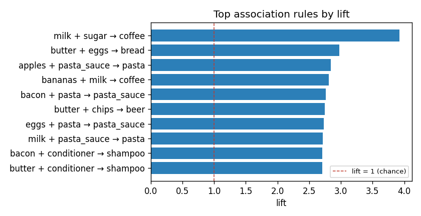
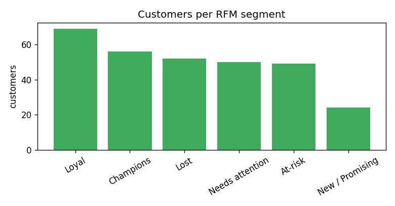

Data mining · association · RFM
data-mining-retail
A reproducible fictional retail pipeline ranks cross-sell rules by lift and turns Recency, Frequency, and Monetary behavior into explainable segments.
Public · synthetic demoThe problem
Popular items can make weak pairings look strong.
Confidence alone rewards common products. Lift asks whether items co-occur more than chance, while RFM separates valuable but quiet customers from generic top spenders.
Input
A fixed fictional transaction history
3,000 transactions · 300 customers · 16 items customer_id, transaction_date, item, price Planted patterns include milk+sugar→coffee and butter+eggs→bread.
The money shot
Measured associations and actionable customer states


| Antecedent → consequent | Support | Confidence | Lift |
|---|---|---|---|
| milk + sugar → coffee | 0.0803 | 0.7303 | 3.926 |
| butter + eggs → bread | 0.0580 | 0.5421 | 2.978 |
| apples + pasta_sauce → pasta | 0.0283 | 0.5120 | 2.839 |
| bacon + pasta → pasta_sauce | 0.0220 | 0.7952 | 2.764 |
| Segment | Customers | Avg recency | Avg frequency | Avg monetary |
|---|---|---|---|---|
| Champions | 56 | 3.5 | 12.5 | 254.1 |
| At-risk | 49 | 50.5 | 12.7 | 137.6 |
| Lost | 52 | 79.8 | 7.1 | 65.1 |
At-risk customers bought frequently but have gone quiet—the win-back group a top-spender list misses.
How it's verified
Explainable math, not a black box.
Apriori support, confidence, and lift are implemented directly; RFM scores use deterministic quantiles. Tests verify metric math on toy baskets, planted-rule recovery, valid score ranges, complete segmentation, and that Champions are more recent and valuable than Lost.
Honest limitations
- All transactions, rules, and segments are fictional and illustrate the method.
- Support and lift thresholds must be tuned to catalogue size and business cost.
- Large catalogues require lower support carefully and a capped itemset length to control Apriori cost.
- Association is not causation; test merchandising actions before rollout.